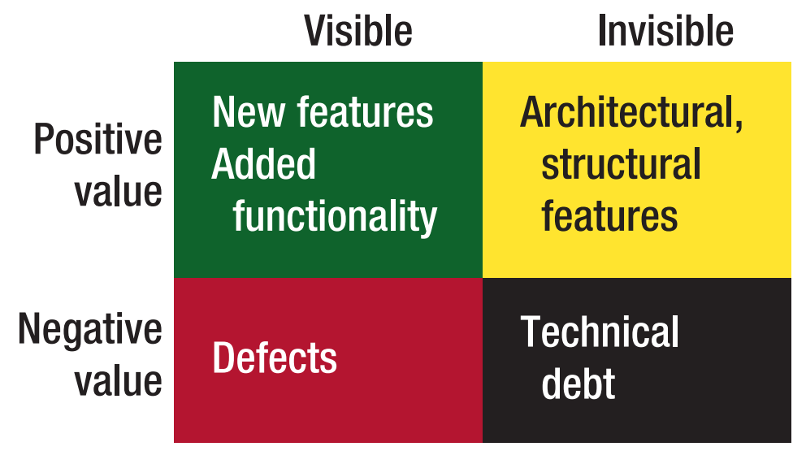
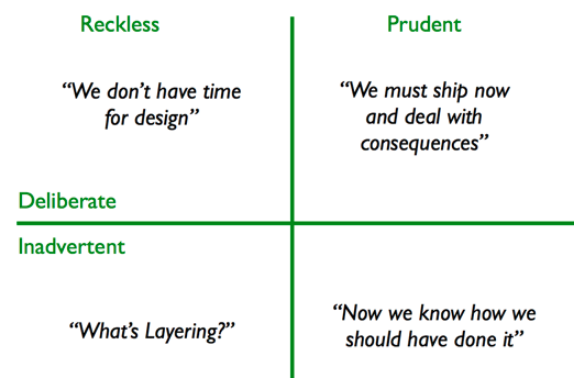

Deuda Técnica
en el Mundo del Software
Concepto de Deuda Técnica
Fue presentado por primera vez por Ward Cunningham en el año 92.
Ward Cunningham
- Fue el inventor de WikiWikiWeb, el primer website de tipo wiki editable por usuarios.
- Participo en el Manifiesto Agil.
- Colaboró con Kent Beck en el concepto de patrones de diseño (popularizado en el libro de GoF).
- Contribuyo en prácticas de la metodología de desarrollo de XP.
¿Qué dice?
Es un concepto que hace referencia a los costos de un esfuerzo adicional para subsanar los problemas generados por elecciones u omisiones que generan una "deuda".
Ward Cunningham
"Algunos problemas con el código son como la deuda financiera. Está bien pedir prestado, siempre que lo pagues.".
"Con dinero prestado se puede hacer algo antes de lo que podría hacerlo sin él, pero hasta que no le devuelva ese dinero pagará intereses."
Ampliación del concepto
Muchos otros autores ampliaron el concepto de Deuda Técnica:
- Martin Fowler en sus cuatro cuadrantes.
- Joshua Kerievsky, con su concepto de negligencia arquitectónica.
- Philippe Kruchten, con sus cuatro áreas.
- Etc.
Ejemplo 1:

Philippe Kruchten
Ejemplo 2:

Martin Fowler
¿Qué puede generar esta Deuda?
- Definición previa insuficiente
- Presión del área de negocio
- Falta de procesos o entendimiento
- Componentes fuertemente acoplados
- Falta de una batería de pruebas
- Falta de documentación
- Falta de colaboración
- Desarrollo en paralelo
- Posponer la refactorización
- Falta de alineación a los estándares
- Falta de conocimiento
- Alta rotación de personal
- Liderazgo técnico pobre
- Cambio de especificación de último minuto
La Analogía
El concepto de Deuda Técnica se puede explicar con una analogía financiera.
Financiación de la Tarjeta de Crédito
Pago Mínimo
Premisas
- Capital a adeudar de $50.000.
- Los intereses mensuales son del 4.5%.
- El pago mínimo representa el 5% aproximado de la deuda total y el 100% de los intereses de financiación.
- Pago mínimo inicial es de $2.500.
- A los 6 meses se pagó $14.254 y sólo se cancelaron $3.443.
- A los 24 meses se pagó $54.223 y sólo se cancelaron $7.460.
- A los 120 meses se pagó $215.899 y sólo se cancelaron $23.708.
- A los 240 meses se pagó $334.146 y sólo se cancelaron $35.593.
¿Qué pasa en el Software?
"Al igual que en la vida real no hay una única deuda".
- Si una persona toma deuda con más de una tarjeta de crédito ...
- ... porque va a tomar una sola con el Software
Ejemplo:
- Deuda técnica 1: no realizar el refactor luego de un prototipo que "gustó" y se "tuneo" para que salga rápidamente a producción en el Módulo A.
- Deuda técnica 2: no tener conocimientos técnicos en la parametrización del ORM y asignar todas las relaciones como lazy loading.
"El pago mínimo no aplica al Software".
- Si bien una tarjeta exige el pago mínimo mensual ...
- ... en el mundo del Software podemos acumular interés (que nos generan punitorios) y retrasar los "pagos"
Ejemplo:
- Punitorios 1: el encargado del refactor se desvincula de la empresa y quien lo sucede antes debe aprender la tecnología, comprender lo ya realizado, diseñar el refactor y por último ejecutarlo.
- ¿Y si éste empleado se desvincula antes del diseño?
- ¿Y si deja la tarea a la mitad?
- Punitorios 2: el encargado de documentar los sets de pruebas manuales, que ejecutó para dar el visto bueno del módulo, demora la tarea 12 meses.
- ¿Se acordará que datos ejecutó?
- ¿Se tendrán que diseñar nuevas pruebas?
- ¿Funcionará el módulo con dichas pruebas?
"Acumular deuda genera intereses"
"Acumular intereses genera punitorios"
"Acumular Deuda a veces es una decisión acertada"
¿Es rentable al negocio saldar Deuda de un software Legacy que ya está siendo rediseñado?
¿Cuándo se cancela la Deuda de la Tarjeta de Crédito?
¿Cuándo se cancela la Deuda en el Software?
Comentarios finales
- Frederick Brooks: No hay balas de plata.
- Generar Deuda es bueno.
- No pagar la Deuda es malo.
- Acumular demasiada Deuda es muy malo.
- La visibilidad de la Deuda tiene que surgir de las personas. La Deuda se comparte entre equipos.
- El tiempo es dinero.
- No incluir regularmente sprints de estabilización es casi una "sentencia de muerte" para el Software.